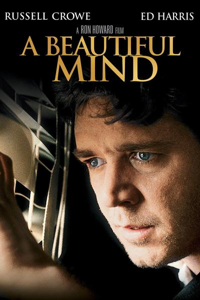
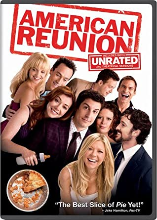
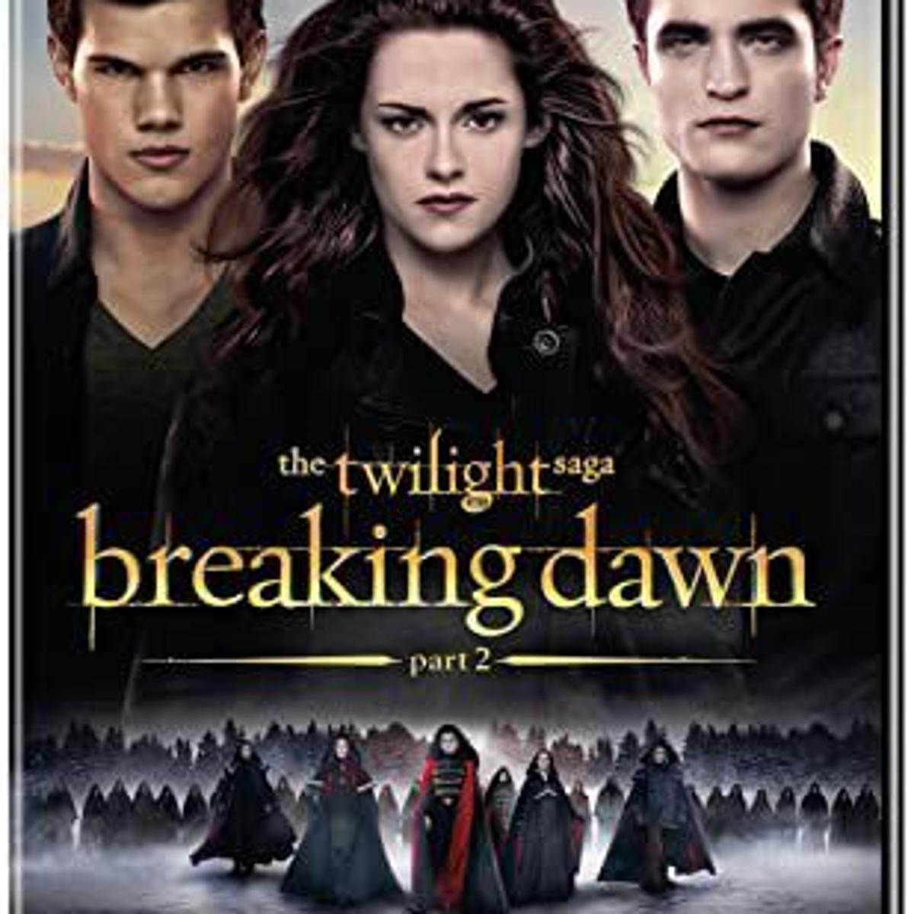
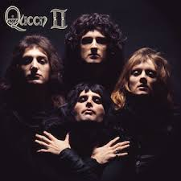
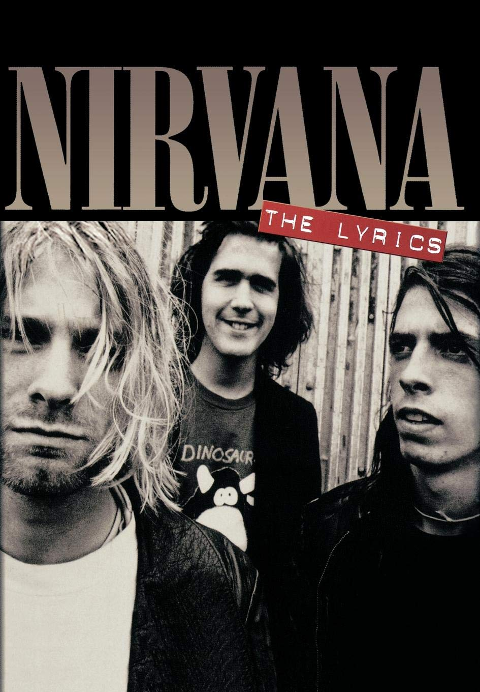
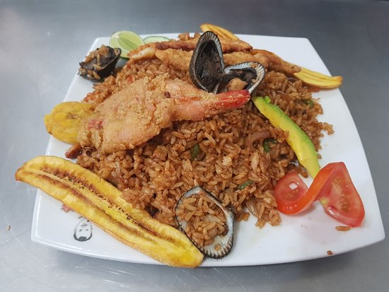
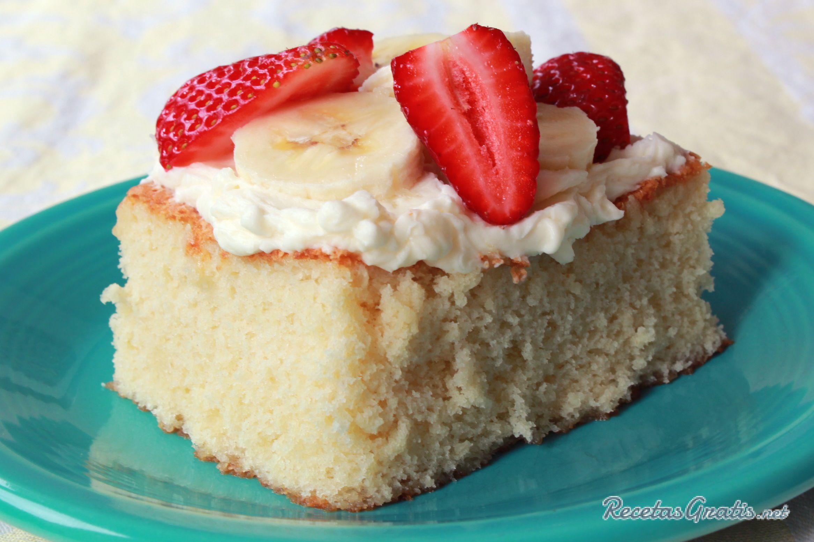
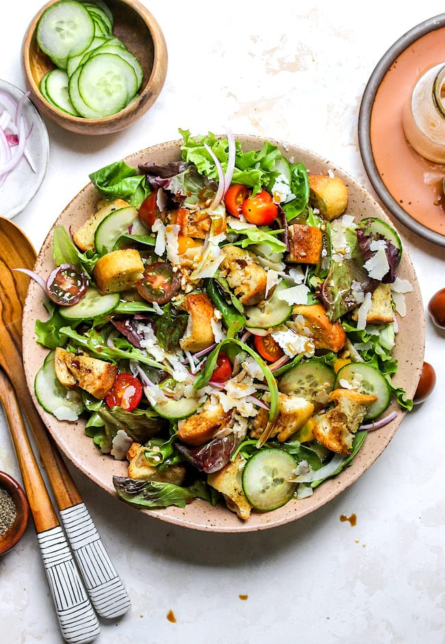
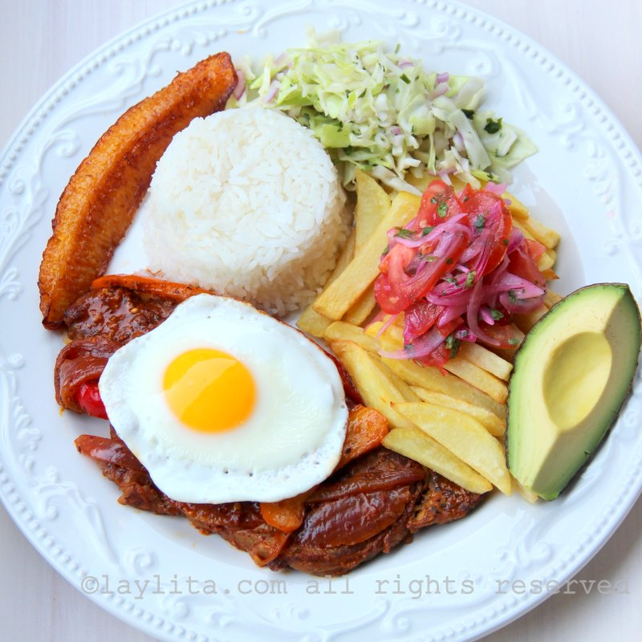

Some of my favorite things
By Oscar
- The Dark The_Dark_Knight_Trilogy
- A Beautiful Mind

- American Pie

- Twilight

I really like the Batman Trilogy:The movie was successful and I changed the way of seeing a superhero movie,
I recommended the movie and I will leave a link of the triology in wikpedia with all the details.
here's the link Visit wikipedia.com!
- Queen

- Nirvana

- Heroes del Silencio
- Julieta Vanegas
I really like Nirvana:Nirvana's style of music changed a generation that felt depressed or had no taste for rock.
Heart shaped box is the first song by this band that I hear. The biography and details such as the music and the members of the band,
are in their biography I will leave the link if they want to know more
here's the link - Visit Nirvana biography.com
- Arroz Marinero

- Dulce de tres leches

- Salads

- Churrasco

I really like Churrasco:This dish is well known in my country, the ingredients:
meat, rice, avocado, eggs, the game of meat, and the cooked potato make this dish very delicious and recommended..
here's the link, to know more about Churrasco Visit laylita.com!
- Tesla Car
Tesla Motors was formed to develop an electric sports car.

- Google Home Mini
- Iphone
- Camera
I really like the Tesla Car :Tesla cars and the story behind the creator
are very interesting to learn and know due to the innovation and proposal of electric cars..
here's the link Visit Tesla.com!
| Book's name |
Author Info |
Publisher |
Website link |
| The Hunger Games |
by Suzanne Collins |
Goodreads Website |
Book Website |
| Centro comercial Moctezuma |
Francisco Chang |
Mexico Industries |
Book Website |
| Ernst Handel |
Roland Mendel |
Austria Paper |
Book Website |
| Island Trading |
Helen Bennett |
UK Company |
Book Website |
| Laughing Bacchus Winecellars |
Yoshi Tannamuri |
Canada Illustrations |
Book Website |
| Alimentari Riuniti |
Giovanni Rovelli |
Italy Porch |
Book Website |
Reading opens the world to us: Comics and MagazinesReading and informing is important, in reality I am not a person who has the habit of reading because I do not feel comfortable and also the laziness of finishing a complete book, but when I encourage it,
I am the person who analyzes and learns this book after having finished reading it.
thanks for visiting my page, come back soon !
Website Programming language
This page was last edited on 19 September 2020, at 18:47 (UTC).